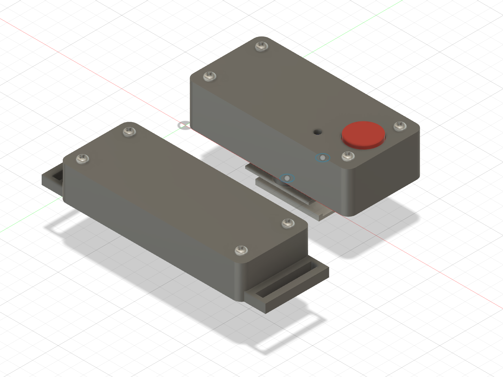

คลิปติดเข็มขัดระดับเอววัดมุมก้มของลำตัว แล้วสั่นเตือนเมื่อเกินเกณฑ์ ดูมุมแบบเรียลไทม์ผ่านเว็บบนมือถือหรือคอมพิวเตอร์
ภาพจำลองเพื่ออธิบายหลักการ ไม่ใช่ข้อมูลจากอุปกรณ์จริง
ปวดหลังส่วนล่างเป็นปัญหาสุขภาพระดับโลก และปัจจัยด้านอาชีพถูกนับรวมในปัจจัยเสี่ยง — แต่คนยกของมักไม่รู้ว่าตัวเองก้มลึกแค่ไหนขณะทำงาน
ทั่วโลกมีอาการปวดหลังส่วนล่างในปี 2020 (คาดว่า 843 ล้านคนในปี 2050) [1]
ของเวลางานของคนงานก่อสร้าง 15 คนอยู่ในท่าก้มลำตัวเกิน 20° (กลุ่มตัวอย่างเล็ก) [3]
ของแรงงานหญิงในงานก่อสร้างไทยที่ศึกษา (57.7%) รายงานอาการกล้ามเนื้อและกระดูก ส่วนใหญ่หลังส่วนล่างและไหล่ [6]
เป็นสถิติ/การสำรวจเฉพาะกลุ่ม ไม่ได้พิสูจน์ว่าการก้มหลังเป็นสาเหตุโดยตรง · ข้อสมมติฐานว่าผู้ใช้ไม่รู้ตัว ต้องยืนยันกับผู้ใช้จริง (USER_UNVALIDATED)
สามขั้นตอนง่าย ๆ
คลิปโหนดที่เข็มขัดระดับเอว ยืนตรงแล้วกดปุ่มค้าง 3 วินาที เครื่องจำท่ายืนของคุณ ไม่ต้องรู้ทิศการติดตั้ง
เซนเซอร์ IMU เทียบแรงโน้มถ่วงกับท่ายืน 50 ครั้งต่อวินาที โดยมีไจโรช่วยตอนขยับเร็ว เฉลี่ยลดสัญญาณสั่นไหว
ก้มเกิน 45° ค้างเกิน 0.8 วินาที → สั่นสั้น 3 พัลส์ เตือนซ้ำเร็ว ๆ → สั่นยาว 3 วินาที เลือกโหมด "ตอนลุกขึ้น" ได้
ให้ข้อมูลทันที เพื่อให้ผู้ใช้ปรับท่าเอง
สั่นที่เอว ไม่ต้องมองจอ ในงานทดลองจำลองก่อสร้าง สัญญาณสั่นช่วยลดมุมก้มสูงสุดในงานยก–วางและตักดิน [2]
เกณฑ์ 20–80° และโหมดเตือนปรับผ่านหน้าเว็บ แล้วบันทึกลงอุปกรณ์
กราฟ 60 วินาที จำนวนครั้งที่เตือน และบันทึก CSV ไว้ทบทวนร่วมกับผู้สอนหรือผู้ดูแลความปลอดภัย
เว็บคุยกับอุปกรณ์ตรงผ่าน Bluetooth ไม่มีบัญชีผู้ใช้ ไม่มีเซิร์ฟเวอร์เก็บข้อมูล

โหนดเอว คลิปเข็มขัด XIAO ESP32-C3 + IMU MPU6050 + แบตลิเธียม + มอเตอร์สั่น + ปุ่มปรับศูนย์ · โหนดข้อมือ สายรัดสั่นเตือนตามคำสั่ง (เฟิร์มแวร์ยังไม่เสร็จ)